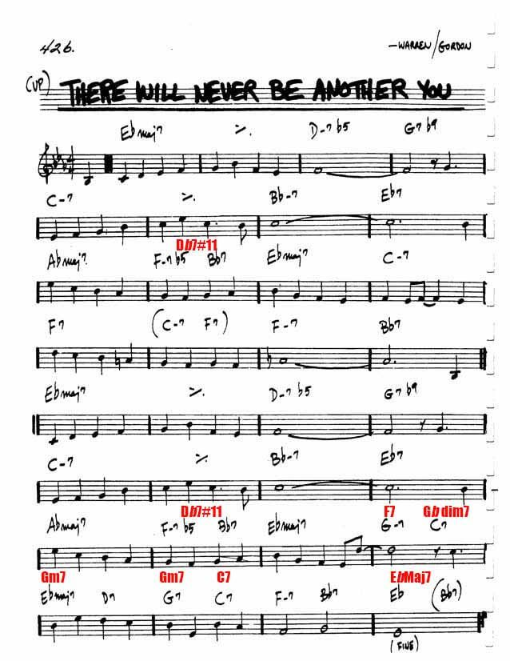
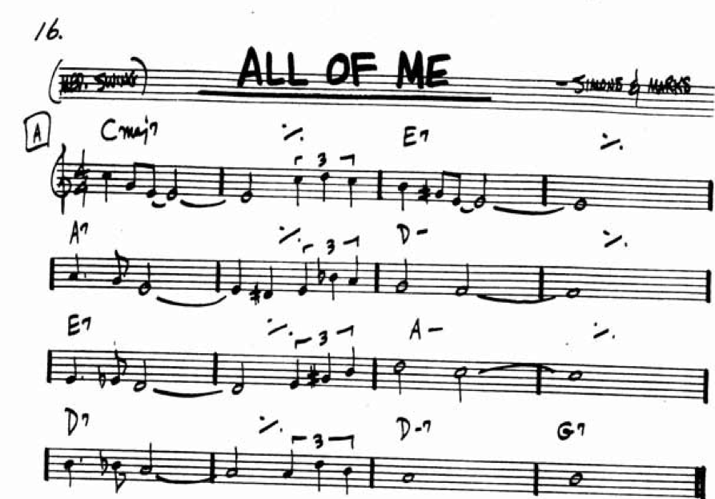
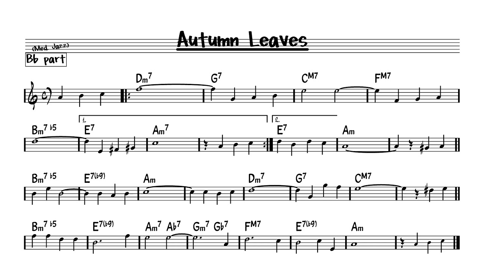
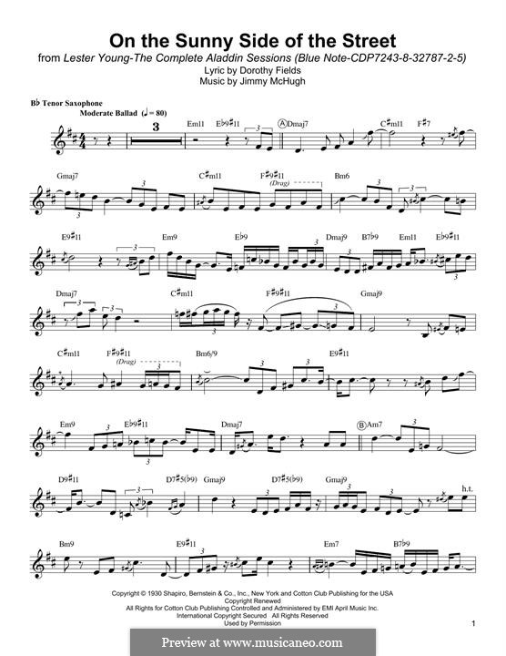

Jazz is a music genre that originated in the African-American communities of New Orleans, United States. It originated in the late 19th and early 20th centuries, and developed from roots in blues and ragtime. Jazz is seen by many as "America's classical music".
learn more about Jazz music
Like
Song
Artist
Youtube link
Interesting facts
Picture
There will never be another you
Harry Warren and Mack Gordon
the song was written for the Twentieth Century Fox musical "Iceland" (1942).
the song has many versions

All of me
Gerald Marks and Seymour Simons
"All of Me" first came to public awareness when a performance by Belle Baker was broadcast over the radio in 1931.
The song was used in the 1932 film Careless Lady.
Frank Sinatra recorded several versions of "All of Me".

Autumn leaves
Joseph Kosma and Jacques Prevert
An instrumental version by pianist Roger Williams was a #1 best-seller in the USA Billboard charts of 1955.
The song is in AABC form.
"Autumn Leaves" offers a popular way for beginning jazz musicians to become acquainted with jazz harmony as the chord progression.

On the sunny side of the street
Jimmy McHugh and Dorothy Fields.
Having become a jazz standard, it was played by Louis Armstrong, Dave Brubeck, Earl Hines, Benny Goodman, Lionel Hampton, Erroll Garner, Dizzy Gillespie, Art Tatum, James Booker, Count Basie, and Lester Young.
The Louis Armstrong version was recorded in the key of C major, but it has been recorded in a range of keys; Ted Lewis recorded it in D major and Ella Fitzgerald in G major.
Richman and Ted Lewis enjoyed hit records with the song in 1930.

Take five
Paul Desmond
Although released as a single on September 21, 1959 , "Take Five" fulfilled its chart potential only when reissued in May 1961
Take Five" is known for its distinctive two-chord [b] piano vamp; catchy blues-scale saxophone melody; inventive, jolting drum solo